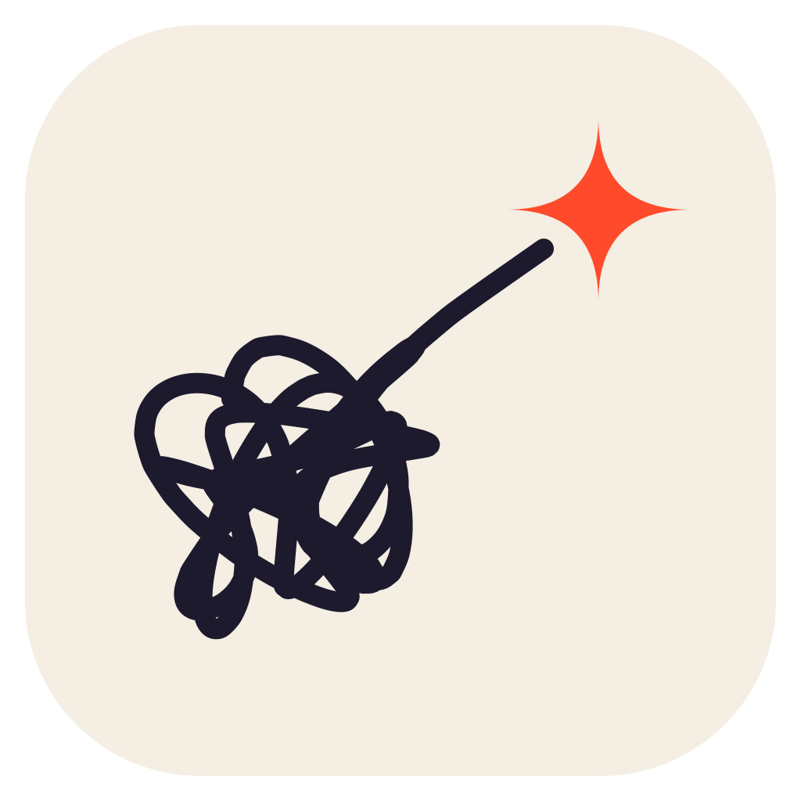

Changelog
How thinky was built, newest first.
Releases are numbered "Build N". The first five milestones below tell the story of Builds 1 to 33; every release after them gets its own entry, and its notes are also on the releases page. Until Build 32 the app was called Lean Outliner.
Build 48 · version 0.5.9 (November 2026)
- Change keyboard shortcuts in Settings → Typing & keys: press Change, then the new keys; saved in config.edn, where Logseq reads them too.
- "Show attachments on this page" in a page's ⋯ menu highlights every note that links to a file, with ↑ / ↓ to step between them.
- With notes selected, ← folds and → unfolds; Ctrl+↑ / Ctrl+↓ fold and unfold as in Logseq.
- Shortcuts with Ctrl or Alt from config.edn now work when no note is being typed in.
- Check this folder says "files" (with each one's kind) and reads in short labelled parts; Settings' tabs are rearranged, with About and Help apart.
Build 47 · version 0.5.8 (November 2026)
- Highlights waiting in your journal as quick captures are marked on their article too, before you file them.
- Passages that start with a quick capture's time are found again on their article.
- The browser extension (1.1.1): nothing is sent to the journal with no text selected, the switch sits behind a gear, and passages are found more often.
Build 46 · version 0.5.7 (November 2026)
- See your highlights again: the browser extension marks the passages already in your notes when you come back to an article, and sharing an article on the phone lists them (how).
- To-dos: right-click or hold a to-do's box for every state, not only Done.
- A property's page shows each of its values with a count; pick one to see only those notes.
- The note menu has "Number its sub-notes" and "More commands…" (the whole "/" list).
- The journal widget draws your notes as the app does: bold, italics, highlights, headings, coloured links and tags, drawn to-do boxes and small pictures.
- Text size changes when you let go of the slider (with − and + buttons); long picture names in Check this folder have room on a phone.
Build 45 · version 0.5.6 (November 2026)
- A page's title has room under it: the filter box of All pages, To-dos and Properties, Settings' tabs and a page's properties box no longer sit right against the title.
- Settings → Look: the ring round the look in use no longer touches the heading above it.
Build 44 · version 0.5.5 (November 2026)
- Tables in notes: rows of cells between "|"s with a line of dashes under the first row show as a table.
- Safer saves: a save is put on the disk before the page's file is replaced.
- Long pages stay quick to edit, the To-dos list opens faster with thousands of to-dos, and a long scroll back through the Journals no longer slows typing.
- On a phone, dots, to-do boxes and small buttons are easier to hit, the notes use the top strip while you type, and the toolbar shows whole tools.
- The "/" list has an icon on every row, and the app's text sizes and corners follow one short scale.
- Faint words are darker in four looks, the sidebar's drawing no longer sits under long lists, and the Azulejo look was taken out.
Build 43 · version 0.5.4 (November 2026)
- A hidden sidebar peeks out when the mouse rests on its button, floating over your notes.
- Each property's page has the same "shows on notes as" choice as Settings, and the Tags list has a filter and A to Z / Most used.
- Backups: a "Choose…" button picks the backup folder, so you don't have to type it.
- See before you decide: unused and deleted pictures open big, deleted pages open read-only, and "Where was it used?" finds a picture in older copies of your pages.
- Sync-conflict copies can be compared side by side with their page and merged, with only the differing words highlighted and nothing lost by default; the copy then goes to the bin.
- "Check this folder" keeps its report when you go elsewhere and come back.
Build 42 · version 0.5.3 (November 2026)
- A Google Play version of the Android app, for its Play Store listing. It is the same app, updated through Google Play; the downloadable APK is unchanged and keeps its one-click updates.
Build 41 · version 0.5.2 (November 2026)
- A calmer top strip on the laptop: each button has a fixed spot, Back and Forward appear only when there's somewhere to go, and the tabs always start just past the sidebar's edge.
- The logo and name moved into the top of the sidebar.
- Search opens in place, growing out of the magnifier with your recent pages under it; menus open out of their own button the same way.
- One smooth feel for everything that opens and closes (Settings › Look › Animations turns it off).
- The app's version (0.5.2) is now the one shown in Settings › Updates & about, and updates compare versions.
Build 40 · version 0.5.1 (November 2026)
- Settings in six tabs: Updates & about, Notes, Safety, Look, Writing and Capture.
- An "Update ready" button when a newer build is out, with Update now and What's new; the app checks every 2 hours.
- What's new in the app: each build's notes, newest first.
- Night looks dim the page darker, not lighter, behind search and dialogs.
Build 39 · version 0.5.0 (November 2026)
- thinky night: a warm charcoal look with cream words, and Light / Dark / Match system in Settings › Look.
- A lighter phone top bar that slides away while you read or type.
- Press and hold Back or Forward to jump to a page in the history, like a browser.
- On a phone, swipe sideways on a note to move it in or out a level.
- Tap the empty line under the last note to add one; a compact "Add a note" card on the phone.
- Softer dots and level lines; faster typing on long pages.
Build 38 · version 0.4.6 (November 2026)
- YouTube videos written Logseq's way play in place.
- Settings › Look › Animations turns off fades and slides.
- "Pages in …" includes pages named under a page's aliases.
- Menus close from their own button, and the phone's search box keeps its size with the keyboard up.
Build 37 (November 2026)
- A "+" for a new tab is always there on the laptop; a note's menu opens it in a new tab or to the side.
- Filter buttons work like a shop's filters: click to show only those, right-click (or hold) to hide them, × to let one go; the To-dos order sits on the right and its page buttons behind a filter button.
- "Pages in …" and "Pages tagged with …" sort and filter like linked references.
- Property display: show any property as usual, quiet, as an icon or hidden, and mark its notes with a coloured line.
- Optional backups on the laptop: dated zips of the notes folder, or a git repository such as GitHub, only when something changed.
- Android: "Add to thinky" over selected text adds it to today's journal with no window.
- Missing pictures no longer lists files whose names have brackets or an apostrophe.
Build 36 (November 2026)
- Namespaces in All pages fold, and show only groups of two or more pages.
- Ctrl+R and F5 show the notes as their files are now, without reloading the window; on a phone, pull the page down.
- To-dos count the links of the notes they sit under.
- Show hidden properties in a note's menu; Rename or merge… for a property, in every note.
- Check this folder lists notes that link to missing pictures.
Build 35 (November 2026)
- The browser extension, thinky highlights, can come from the Edge Add-ons store or the Chrome Web Store as well as being loaded by hand; Settings › Capture › Highlights from your browser has a button for each store.
- The downloads are named thinky (
thinky-setup.exe,thinky-portable.exe,thinky.apk); the old names stay too, so older builds still update. - Newer build tools.
Build 34 (October 31, 2026)
- The first build from the public repo, after a security review: picture links can't reach other computers, words from the web stay plain words, files in the notes folder never run, and no web page can add a note.
- To-dos newest first, with buttons for the pages they're on; linked references fold from their heading.
- A spelling check while typing (Settings › Look).
- Faint words easier to read in several looks; the Windows capture box has [[ ]], # and To-do buttons.
- Updates now come from github.com/srikanth-iyer/thinky.
Milestone 5 — Builds 32 and 33 (October 29 and 30, 2026)
- The app is now called thinky, with its own logo, and a new look of the same name.
- Highlights from Edge: highlight passages while reading and send them to one page per article.
- Neat web links in quick captures.
- Safety copies kept in the notes folder (so a synced folder keeps them too); an alias counts as its page.
- A welcome screen that can start a new notes folder with a short tour.
- Quieter phone menus and bars.
- Edit linked references right where they are;
#tagscounted in Tags; simpler to-do filters; a sort menu for references. - A faint "+" after the last note, and a calm start-up.
- Send feedback (Settings › About) opens a new issue on GitHub, with nothing personal added.
Milestone 4 — Builds 27 to 31 (October 27, 2026)
- Tabs, and two pages side by side on the laptop.
- Roomier journal days, Go to date, Undo across days.
- Linked references show the notes under them, as in Logseq.
- History for every page: its earlier versions, and one tap to put one back.
- A menu on each note's dot, and moving notes by dragging them, even to other pages; files dropped from Explorer.
- A shortcut key that opens the Add to journal box at once.
- The Logseq feel: Plain looks like Logseq, smarter search with recent searches, a command list (Ctrl+Shift+P), block references, typing pairs, formatted paste, Copy page as text, a sliding sidebar, drag handles, wide mode and folding.
- All pages as a table, renaming by the title, merging pages,
leanoutliner://links to pages and notes. - The Inter font bundled for the Plain looks.
Milestone 3 — Builds 23 to 26 (October 26, 2026)
- Reading and writing: coloured note boxes and quotes, page icons, easier links, find and replace, press and hold to preview a link, pinned parent notes, swipes on the phone.
- The clash screen: when a page changed here and elsewhere, both versions side by side with a suggested pick, and nothing is ever lost.
- Safety copies of recently changed notes, and a bin for pictures nothing uses.
- Pictures you can resize, as in Logseq.
- An "Add note" tile in Android's Quick Settings and shortcuts on the app icon.
- A native "Add to journal" box on Windows that opens at once.
- One-click updates from Settings › About, checked against a signing key.
Milestone 2 — Builds 13 to 22 (October 26, 2026)
- To-dos with dates and repeats, a calendar, templates, unlinked references, rename and delete with a bin.
- Quick capture from the laptop (a link, a box and a shortcut key) and from the phone.
- Safer syncing: edits made elsewhere are merged, unreadable files are never overwritten.
- The app's own title bar with back and forward, Logseq-style thread lines, link colours and fonts.
- Phone fixes: cleaner lines, the toolbar, file access, widgets, the Back button.
- Journals show each day's linked and unlinked references and a "Scheduled & deadline" box.
- A Home button, Settings in tabs, and a new look, Plain night.
- The Windows "Add to journal" box, launcher-style.
Milestone 1 — Builds 1 to 8 (October 25, 2026)
The first version.
- A Rust core that reads and writes Logseq-style Markdown notes, keeping every untouched line byte for byte.
- An outline editor in plain HTML, CSS and JavaScript, wrapped as a Windows and an Android app with Tauri.
- Journals,
[[links]],#tags,key:: valueproperties, backlinks and search. - Android: a home-screen widget with today's journal, a quick-capture pop-up, and sharing into the journal.
- Nine looks with live previews.
- Obsidian-style YAML headers read as page properties; emoji and curly quotes in page names; duplicate page names handled safely.